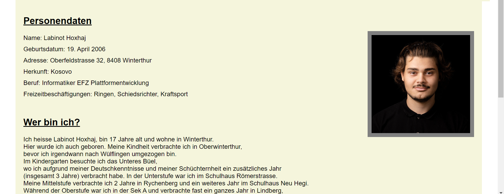

Development Fundamentals
Lernen wie VS-Code und Git kennen.
VS-Code
VS Code ist ein Quelltext-Editor. Die Anwendung ist kostenlos, plattformübergreifend und wurde im Jahr 2015 von Microsoft veröffentlicht. Man kann VS Code mit Erweiterungen, sogenannten "Extensions", erweitern und dadurch noch mehr Möglichkeiten nutzen, um das Leben und die Arbeit zu vereinfachen. VS Code ist ein Open-Source-Projekt auf GitHub und wird hauptsächlich von einem Team in der Schweiz entwickelt.
- Erweiterbarkeit: VS Code ist stark anpassbar und unterstützt zahlreiche Erweiterungen, die die Funktionalität erweitern.
- IDE-Funktionen: VS Code bietet viele integrierte Entwicklungsumgebungs-Funktionen wie Syntaxhervorhebung, Codevervollständigung, Debugging und mehr.
- Plattformübergreifend: VS Code ist auf Windows, macOS und Linux verfügbar.
- Intelligentes IntelliSense: VS Code bietet kontextbezogene Codevorschläge für eine effiziente Programmierung.
- Spezialisierte Erweiterungen: Es gibt Erweiterungen für verschiedene Technologien und Frameworks, um die Entwicklung zu erleichtern.
GitHub
Der Onlinedienst GitHub gehört zu Microsoft und dient der Softwareentwicklung und Versionsverwaltung für Projekte, die auf Git basieren. Das Unternehmen hat seinen Sitz in San Francisco, USA. Der Dienst verzeichnet über 83 Millionen Nutzer und über 200 Millionen Repositories (Stand: August 2022). GitHub ermöglicht die Zusammenarbeit beim Programmieren von Code und protokolliert alle Änderungen übersichtlich, sodass die Teammitglieder immer wissen, was geändert wurde und wie es geändert wurde.
- Soziale Plattform: GitHub ermöglicht soziale Interaktionen und Zusammenarbeit zwischen Entwicklern.
- GitHub Actions: Eingebaute CI/CD-Tools zur Automatisierung von Entwicklungsworkflows.
- GitHub Pages: Einfache Möglichkeit, Projekte online zu hosten.
- GitHub Gists: Zum Teilen von Codefragmenten und Notizen.
GitHub hat sich zu einer der wichtigsten Plattformen für Softwareentwicklung und -zusammenarbeit entwickelt und wird von Einzelpersonen, Open-Source-Communities und Unternehmen auf der ganzen Welt genutzt.
Fazit
Es war eine sehr spannende und lehrreiche Woche, in der ich viel gelernt habe und auch Freude am Lernen hatte. Mir haben die Themen und Aufgaben gut gefallen. Besonders habe ich mich gefreut, da ich GitHub und Visual Studio Code ohnehin weiterhin verwenden werde.